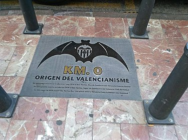
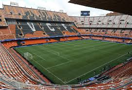

Vamos ha empezar haciendo una pequeña presentacion sobre mi pagina web que se sera una pagina sobre el valencia cf historia, que trofeos gano y cuando aparte tendremos una pagina de contacto
HISTORIA
Fundacion y primeros años

1919 – 1920
En enero de 1919, Luís Bonora, jugador del Deportivo Español se rompe una pierna en medio de un encuentro en Elche y a causa de una embolia fallece. Sus compañeros desolados y consternados por tan lamentable pérdida deciden disolver el club, pero el gusanillo del fútbol ha prendido profundamente entre todos y Octavio Augusto Milego (quien desde mediados de 1918 preside el club tras su paso por el F.C. Sagunto), el mes siguiente junto al mecenas Gonzalo Medina (ex también del F.C. Sagunto), Pascual Gascó, Julio Gascó, Fernando Marzal, Salvador Aliaga y Pepe Llorca, todos ellos ex futbolistas, deciden en el Bar Torino la labor de constituir un nuevo club que en el futuro compita con los grandes de entonces a nivel nacional.
Serguir leyendo
El 1 de marzo de 1919, después de varias semanas de gestación y tras muchos rumores en la prensa, quedaba constituido el Valencia Foot-ball Club, teniendo como finalidad la práctica de fútbol como actividad preferente y la de otros deportes como el atletismo. La indumentaria elegida en principio fue camisa blanca y pantalón blanco, adoptando más tarde en 1921 el negro para el pantalón. Como primer presidente de la asociación resultó electo Octavio Augusto Milego, siendo presentada en el Registro del Gobierno Civil el 18 de marzo para empezar de inmediato a localizar jugadores y un terreno donde poder jugar, hallándose este en septiembre de 1919 cuando alquilaron el Campo de Algirós, recinto estrenado el 7 de diciembre frente al Sport Club Castalia. Sus inicios fueron complicados y los clubs rivales existentes en la ciudad pronto lo tomaron como el gran rival a batir por la cualificación de sus jugadores. En 1921 cambian de escudo abandonando el primitivo y adoptando el actual.
1920 – 1930
La década de los veinte se caracteriza por la expansión social que sufre el club, la cual obliga a construir el Campo de Mestalla en 1923 -inaugurado el 20 de mayo con un partido amistoso frente al Levante F.C., y resultado final de 1-0 con gol del delantero valencianista Arturo Montes- y la consecución de diversos Campeonatos Regionales como el de Levante de la 22/23, y los de Valencia de las temporadas 25/26 y 26/27. Destacan dos jugadores, Montes y Cubells, quienes arrastran y dividen a partes iguales a la afición. Famosos son sus duelos iniciales con el Real Gimnástico F.C., Real desde 1926 y gran dominador hasta mediada la década y posteriores con el Levante F.C.. Pese a todo, no alcanzaba notoriedad a nivel nacional y prueba de ello es que no consigue entrar en la Primera División de la temporada 28/29. Aún así disputa una serie final con Real Betis Balompié, Sevilla F.C. y Real Racing Club del que sale este último victorioso para adjudicarse la décima plaza en juego. La entrada de Luís Colina como secretario técnico le va a dar el empuje que necesita. Su debut en Segunda División finaliza con un quinto puesto, mientras es sexto en la 29/30. En la 30/31 es campeón con un gran equipo y asciende a Primera.
1930 – 1940
En los primeros años de los treinta, el club se instala en Primera y el objetivo es asentarse y progresar deportivamente. Se conquistan el Campeonato de Valencia, temporadas 30/31, 31/32, 32/33, 33/34, 37/38 y 39/40, y el de Levante en la 36/37. El club ha crecido enormemente y ya es sin discusión el primero de la ciudad, con una plantilla completamente profesional.
Seguir leyendo
La irrupción de la Guerra Civil en 1936 frena en seco la progresión de un club que sueña con cotas mayores. Pese a ello el Valencia F.C. sigue disputando encuentros y torneos para mantener su plantilla en forma hasta 1938, y prueba de ello es un cuarto puesto en la Liga Mediterránea, celebrada durante la temporada 36/37. Así mismo, el 18 de julio de 1937 disputa la Final de la Copa de la España Libre en Barcelona, perdiendo 1-0 frente al Levante F.C.. Durante el conflicto, su campo sufre cuantiosos daños al ser bombardeado y casi destruido.
Delantera eléctrica y Luis Casanova (1940-1959)
1940 – 1950
Tras la contienda entran los militares en la dirección y se acomete la reforma de Mestalla. Luís Casanova accede a la presidencia y con su empeño y una base de jugadores en la que destaca la delantera eléctrica, Epi, Amadeo, Mundo, Asensi y Gorostiza, se consiguen tres Campeonatos de Liga en las temporadas 41/42, 43/44 y 46/47. En 1941 cambia el nombre de la sociedad pasando a llamarse Valencia Club de Fútbol por decreto. En la Copa del Generalísimo se obtiene un triunfo en la edición de 1941 frente al Real C.D. Español tras vencer por 3-1, malográndose las de 1944, 1945 y 1946 frente a Atlético de Bilbao, 0-2 y 2-3, y Real Madrid C.F. por 3-1 en la última edición. En 1949 vuelve a perder en la final, en esta ocasión frente al Atlético de Bilbao por 0-1. Con esta derrota se cierra un ciclo de grandes éxitos deportivos.
Seguir leyendo
El Valencia C.F. es ya un club grande y en la ciudad del Turia tienen lugar varios acontecimientos que son determinantes en el futuro. En septiembre de 1939 se fusionan Levante F.C. y Gimnástico F.C. integrándose este último en el primero quien adopta el nombre de U.D. Levante-Gimnástico, título que no acaba de gustar y es reemplazado por el de Levante U.D. desde 1941, mientras que en la sede del equipo ché se forma en 1943 el C.D. Mestalla aprovechando la estructura del C.D. Cuenca, un club de barrio. El C.D. Mestalla es diseñado para albergar jóvenes jugadores con proyección y desde su nacimiento será la base de la cantera valencianista.
1950 – 1960
En los años cincuenta entra en escena el suecano Antonio Puchades, el gran capitán valencianista que marcará historia en el club ché. En la Liga surge la novedad de la entrada de extranjeros, beneficiando en gran medida a Real Madrid C.F. y C.F. Barcelona, quienes con mayores presupuestos establecen desde este instante la supremacía. El Valencia C.F. cuenta con buenas plantillas pero la distancia con los dos grandes se incrementa sobremanera. Lo más destacable es la presencia en dos finales de Copa teniendo como rival al C.F. Barcelona. En la edición de 1952 se pierde por 2-4 con dos tantos de Badenes y en la de 1954 se toman venganza ganando por 3-0, con dos tantos de Fuertes y otro de Badenes. Si Puchades es la estrella, el defensa Quincoces es quien le acompaña como colofón en esta década. En octubre de 1957 la ciudad sufrió la embestida del río Túria, cuyas aguas se desbordaron y causaron una gran tragedia humana y social en la ciudad y alrededores. El presidente Casanova dimite en 1959 cerrando un brillante ciclo deportivo que se ve enardecido con la presencia del C.D. Mestalla en Segunda División durante varias temporadas y ensombrecido por la repentina muerte de Luís Colina.
Primeros títulos europeos (1960-1969)
1960 – 1970
La década de los años sesenta se caracteriza por la consecución de varias Copas de innegable valor. La Liga se ha convertido en coto privado para el Real Madrid C.F., auténtico dominador en España y Europa, con alguna incursión del Club Atlético de Madrid. Así, abandonada la idea de conquistar alguna Liga, el Valencia C.F. se concentra en las competiciones coperas. Han llegado las de Europa y la de ciudades en Feria, denominación más tarde sustituida por Copa de la UEFA. El club valenciano se inscribe en esta última y gana la edición de 1962 teniendo como rival al C.F. Barcelona: 6-2 en casa y empate 1-1 en la vuelta, disputada en el Nou Camp. En 1963 repite triunfo, esta vez frente al N.K. Dinamo de Zagreb croata: victoria por 1-2 en la ida y 2-0 en Mestalla. En la edición de 1964 se llega a la final frente al Real Zaragoza C.D. de los cinco magníficos, perdiendo por 2-1 en Barcelona.
Seguir leyendo
La derrota escuece y no será hasta 1967 cuando se consiga un nuevo trofeo, en esta ocasión del Generalísimo, al vencer por 2-1 al Club Atlético de Bilbao, con goles de Jara y Paquito. Destacan en esta década el presidente Julio de Miguel y los jugadores Waldo y Guillot, en sus principios. En el segundo tramo aparecen Juan Cruz Sol, Pepe Claramunt y Roberto Gil. A final de década el club participa en la Recopa, pero sus intervenciones no pasan más allá de las primeras eliminatorias.
La Liga de Di Stéfano y finales de Copa (1970-1976)
1970 – 1980
La década de los años setenta tiene dos partes claramente diferenciadas; en la primera se llega a la final de Copa de 1970, perdiendo con el Real Madrid C.F. por 3-1 cuando todo lo tenían a favor. En abril de 1970 llega Alfredo di Stéfano al banquillo y se consigue milagrosamente la Liga 70/71 en una jornada final de infarto en la que Club Atlético de Madrid y C.F. Barcelona tienen opciones al triunfo y deben jugar entre sí. Estos empatan y pese a la derrota del Valencia C.F. en Sarriá frente al Real C.D. Español por 1-0, los valencianistas salen beneficiados por tener mejor gol average. En la final de Copa de 1971 se pierde tras un fenomenal partido frente al C.F. Barcelona por 3-4 tras prórroga. En la Liga 71/72 se es subcampeón tras perder un encuentro vital en casa frente al Real Madrid C.F. a pocas jornadas del final. Un desconcertante arbitraje de Ortiz de Mendivil le da el trofeo en bandeja al club merengue. En la Copa se pierde una nueva final, en esta ocasión frente al Club Atlético de Madrid por 1-2.
Seguir leyendo
Llegan tiempos de crisis y Francisco Ros Casares accede a la presidencia en 1973. El club tiene un bajo presupuesto y ni en Liga ni en Copa se consiguen buenos resultados. En Europa tampoco. Destaca en esta era la iniciación de las obras de la ciudad deportiva en Paterna y la presencia de grandes futbolistas como el portero Abelardo, Jara, Valdez y Johny Rep.
La segunda parte de la década viene marcada por la llegada en 1976 de José Ramos Costa a la presidencia y se ficha a Lobo Diarte y Kempes. Este jugador marca el tramo final de los setenta, pues personalmente consigue dos Pichichis y el Campeonato del Mundo con Argentina. Se gana la Copa del Rey de 1979 frente al Real Madrid C.F. por 2-0, pero económicamente se inicia un gran endeudamiento, que junto a las obras de ampliación de Mestalla en vistas al Mundial de 1982, suponen un trauma para el club.
La era de Mario Alberto Kempes (1976-1984)
1980 – 1990
La década de los años ochenta empieza con el triunfo en la Recopa de 1980, final en la que se enfrentan al Arsenal F.C. de Londres y que concluye con empate a cero. Tras la prórroga llegan los penaltis y tras numerosos lanzamientos el portero Pereira detiene el último y definitivo y consigue el título. Es la época de Carrete, Botubot, Bonhof, Saura, Solsona y el gran Ricardo Arias. En 1981 se consigue la Supercopa de Europa al derrotar al campeón de Europa Nottingham Forest F.C.: derrota por 2-1 en el City Ground, y victoria por 1-0 en casa con gol de Felman. El valor doble de los goles conseguidos fuera de casa le proporciona el título.
Seguir leyendo
En la Liga el club baja muchos enteros y se ve amenazado por perder la categoría. En la temporada 82/83 se salva milagrosamente en el último encuentro al derrotar al Real Madrid C.F. por 1-0 cuando este se jugaba el título y gracias a una serie de combinaciones que se dan entre otros clubs. En la temporada 85/86 la suerte no acompaña, se deben algunas nóminas y los fichajes no responden a las expectativas. Con una plantilla llena de promesas se desciende amargamente tras una nefasta temporada, y pese a ganar en la última jornada, el empate entre Cádiz C.F. y Real Betis Balompié salvó a los gaditanos, condenando al club a su primer descenso de la historia a la categoría de plata. La campaña 86/87 se vive en Segunda División, en una Liga que se disputa con el desastroso Play-off, y que al final se abandona al concluir primero, con 57 puntos y campeón de Liga. Después de tan grande frustración, el Valencia C.F. resurge de sus cenizas y bajo la mano de Arturo Tuzón se enmienda la deuda económica, y bajo el entrenador Víctor Espárrago la deportiva. En la temporada 88/89 finaliza tercero y en la 89/90 segundo. Es la época de Fernando, Voro, Giner y Penev, quienes empezarán la siguiente década.
Años difíciles y recuperación con Tuzón (1984-1992)
1990 – 2000
En las primeras ediciones de los noventa, el club se asienta en Primera y participa en Europa, aunque con escaso éxito, y no es hasta la temporada 95/96 cuando vuelve a tener claras opciones de conseguir una Liga con Zubizarreta en la portería y Mijatovic en el centro del campo. En el año 1992 se convierte en Sociedad Anónima Deportiva, cambiando su denominación desde entonces y pasando a ser Valencia Club de Fútbol, S.A.D.. En el verano de 1996 entra Francisco Roig en la presidencia y con él Romario, su gran adalid. El club no prospera y en medio de la crisis deportiva en diciembre de 1997 toma el testigo Pedro Cortés. En agosto de 1998, gana la Copa Intertoto al vencer en la Final al S.V. Wüstenrot Salzburg. Con Rainieri en el banquillo y el protagonismo de Piojo López y Mendieta, se alza la Copa del Rey de 1999 frente al Club Atlético de Madrid al vencer por 3-0.
La época dorada (1997-2004)
2000 – 2010
El presente siglo se inicia con Héctor Cuper en el banquillo, con quien se llega a dos finales de la Champions League bajo el nuevo formato. En la edición de 2000, tras superar las dos fases de grupos y eliminar al S.S. Lazio en cuartos y al F.C. Barcelona en la semifinal, pierde la final con el Real Madrid C.F. por 3-0 en un partido marcado por el nerviosismo valenciano. En la de 2001, superadas las fases de grupo, vence en cuartos al Arsenal F.C. en cuartos y al Leeds United A.F.C. en semifinales, cayendo derrotado en la final frente al F.C. Bayern München en los decisivos penaltis, tras empate a uno final con prórroga incluida. Son dos grandes oportunidades perdidas para inscribir las letras del club en oro.
Seguir leyendo
Llega Jaime Ortí a la presidencia y trae de entrenador a un desconocido pero prometedor Rafa Benitez. Con él se forma un equipo muy serio en defensa y oportunista en ataque que proporciona dos Ligas al club en las ediciones 01/02 y 03/04, más una Copa de UEFA en el año 2004 al derrotar al Olympique de Marseille por 2-0, con tantos de Mista y Vicente. Lamentablemente, la entrada de Juan Bautista Soler a la presidencia del club trae una falta de acuerdo con el entrenador y este abandona la entidad. Se ficha como entrenador a Ranieri y se consigue la Supercopa de Europa 2004 al derrotar al F.C. Porto por 2-1 con goles de Baraja y Di Vaio. A partir de este momento la plantilla esta en un periodo de remodelación, con constantes idas y venidas, cambios en presidencia y directiva, y con el objetivo de recuperar pasadas glorias deportivas que traigan gozo a la afición. En la temporada 07/08, se consigue un discreto décimo puesto en Liga, ganándose contra priori la Final de la Copa del Rey ante el Getafe C.F. por 3-1 con goles de Mata, Alexis y Morientes, bajo la batuta de Ronald Koeman.
La sesión 08/09 trae a Vicente Soriano a la presidencia y a Unai Emery al banquillo obteniéndose un discreto sexto puesto que le devuelve a competición europea. En el torneo de Copa es tempranamente apeado y la campaña se caracteriza especialmente por la gran crisis económica que atraviesa la entidad y el escándalo que se produce con el grupo inversor Dalport, empresa con quien afortunadamente no se llega a ningún tipo de acuerdo. En verano de 2009 el principal acreedor de la sociedad, Bancaixa, impone un gestor de confianza para sanear el club, Manuel Llorente, empezándose a reducir la monumental deuda con una ampliación de capital urgente. En el plano deportivo, Emery conduce a los blanquinegros al tercero puesto en Liga gracias especialmente a los goles de su estrella David Villa y a su fortín de Mestalla, no siendo tan afortunado su paso en Copa donde es eliminado en octavos por el Real C.D. de La Coruña: 1-2 en casa y 2-2 en Riazor.
En la nueva Europa League los valencianos se aplican y tras eliminar al noruego Stabaek I.F.: 0-3 en la ida y 4-1 en casa durante la previa; participan en la Fase de Grupos quedando líderes delante de Lille Olympique S.C., Genoa Cricket F.C. y S.K. Slavia Praha. En dieciseisavos superan al Club Brugge K.V.: 1-0 en la ida y 3-0 en casa; en octavos al S.V. Werder Bremen: 1-1 en casa y 4-4 en la vuelta; cayendo en cuartos ante el Club Atlético de Madrid: 2-2 en Mestalla y 0-0 en el Vicente Calderón, que a la postre sería Campeón el equipo rojiblanco.
La crisis económica (2004-2014)
2010 – 2020
En la temporada 10/11 realizan un papel notable en Liga siendo terceros y encabezando en competencia con el Villarreal C.F. SAD el grupo de sociedades que compiten al margen de unos inalcanzables F.C. Barcelona y Real Madrid C.F., participando en la Liga de Campeones donde son segundos en la Fase de Grupos tras el Manchester United F.C. superando a Glasgow Rangers F.C. y Bursaspor Kulübü. En Octavos son eliminados por el F.C. Schalke 04 Gelsenkirchen tras empatar 1-1 en Mestalla y perder por 3-1 en la localidad alemana.
Seguir leyendo
En la edición 11/12 el conjunto xè no realiza un buen torneo a pesar de que consigue terminar tercero en Liga -aunque a treinta puntos de los dos primeros- demostrando la gran desigualdad existente, un puesto que certifica su pase a la Liga de Campeones. Clasificado para esta competición en la temporada precedente, su papel es discreto siendo tercero en su grupo precedido por Chelsea F.C. y Bayer 04 Leverkusen F.C. mientras cuarto es el KRC Genk. Eliminado de este campeonato pasa a Dieciseisavos de la Liga de Europa donde supera a Stoke City F.C.; 0-1 en la localidad británica y 1-0 en casa, a PSV Eindhoven F.C. en Octavos; 4-2 en casa y 1-1 en la localidad holandesa y AZ Alkmaar en Cuartos; 2-1 en la localidad holandesa y 4-0 en casa, cayendo en Semifinales ante el Club Atlético de Madrid SAD; 4-2 en la ida y 0-1 en casa.
La obra del nuevo estadio que albergará futuros éxitos situado en la Avenida de las Cortes Valencianas se encuentra detenida, estando los nuevos tiempos marcados por la rigidez económica que ha desembocado en la venta de sus principales figuras, David Villa al F.C. Barcelona, David Silva al Manchester City F.C. y Juan Mata al Chelsea F.C., para poder hacer frente a parte de la deuda a corto plazo.
MESTALLA

Los primeros años tras su fundación en 1919, el Valencia FC entrenó y disputó sus encuentros en el desaparecido Campo de Algirós (Camp d'Algirós en valenciano). El campo se encontraba en el Camino de Algirós, entre las actuales calles de Finlandia y del General Gil Dolz. Tenía una capacidad para 5.000 espectadores y unas dimensiones de 91 x 47 metros (orientación Este-Oeste). Las condiciones del terreno de juego eran muy modestas y no era de césped sino de tierra. El propietario del recinto era Eugenio Miquel, el cual alquiló el campo a los dirigentes valencianistas por 100 pesetas al mes.80 El campo fue estrenado el 7 de diciembre de 1919 con un partido amistoso entre el conjunto valencianista y el Castalia de Castellón. El resultado fue de empate sin goles. Al día siguiente, se volvieron a ver las caras ambos equipos y esta vez el Valencia se impuso por 1-0.81
El 20 de mayo de 1923 fue inaugurado el Estadio de Mestalla. Su nombre se debe a la histórica acequia de Mestalla que pasaba tras el gol sur del estadio. Por entonces, el campo tenía unas dimensiones de 100 x 59 metros y un aforo de 17.000 espectadores.85 El día de la inauguración se celebró un encuentro amistoso que enfrentó al Valencia con el FC Levante. El resultado final fue de 1-0 para el conjunto local con gol marcado por "Montes" (Arturo Montesinos Cebrián).83
Seguir Leyendo
Entre 1969y1994 se denominó oficialmente Estadio Luis Casanova, en honor a Luis Casanova Giner, uno de los mejores presidentes de la historia del club durante dos décadas (los 40 y los 50) en las que se conquistaron tres títulos de Liga y tres Copas, además de varios subcampeonatos y promotor de la gran ampliación del estadio.
Desde 1994el estadio recuperó su nombre de Mestalla, y tuvo una capacidad para 50.242 espectadores desde su última ampliación en 1998 y unas dimensiones de 105 x 68 metros. Actualmente se ha visto su aforo reducido a 48.600 espectadores.
Ha acogido desde sus primeros años un total de 31 partidos internacionales de la Selección española de fútbol (entre ellos los de la fase final del Mundial de España 1982), más 5 encuentros de la Selección Olímpica de España durante los Juegos Olímpicos de 1992, y ha sido sede de 10 finales de la Copa del Rey, la última en 2014
En octubre de 2013 se inauguró una nueva imagen del estadio dirigida a aumentar los ingresos del club por marketing.88 Esta nueva imagen incluía pintar los asientos en una combinación de colores naranja y blanco, mostrando en negro la silueta de un gran murciélago, y se inauguró el Mestalla Forever Tour,89 un recorrido guiado que se ofrece todos los días por los lugares más emblemáticos del estadio. Además en verano de 2014 se pintó y decoró todo el exterior del estadio, alternando negro y naranja, así como fotografías de gran tamaño de exjugadores del club y de éxitos deportivos.
Aqui os dejamos un video resumen de la evolucion desde su creacion